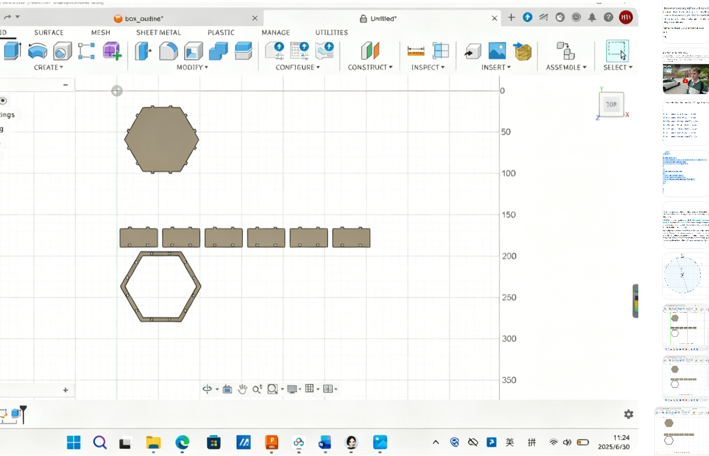
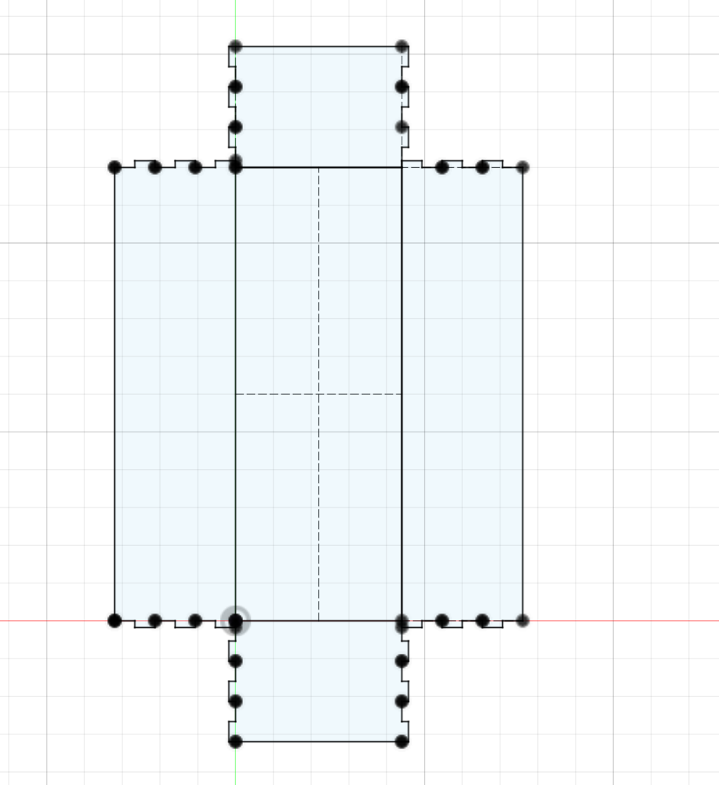
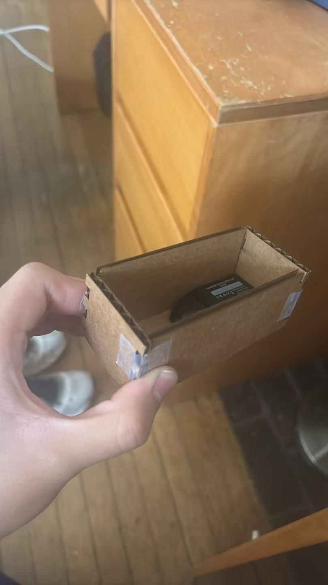
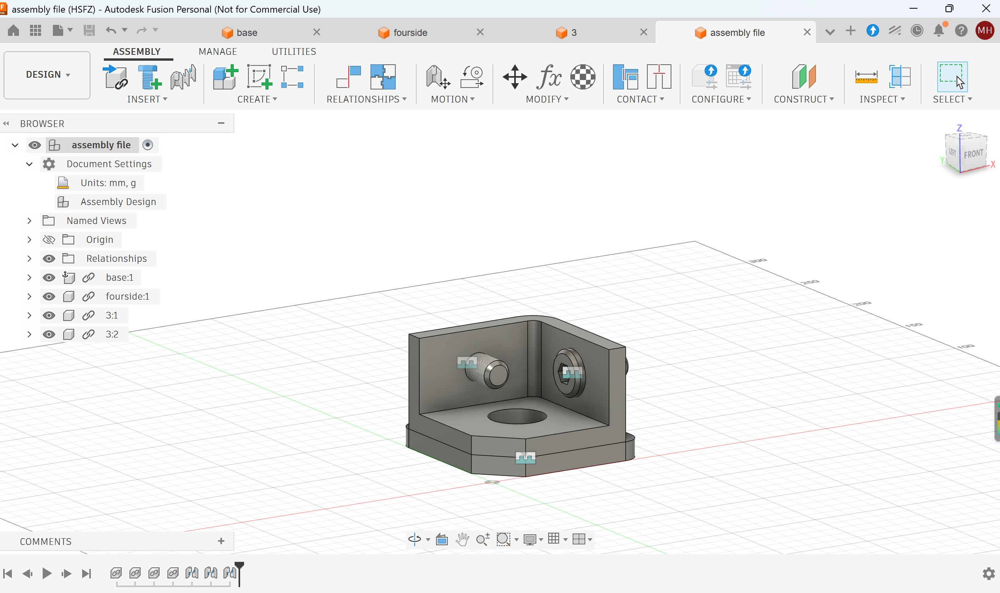
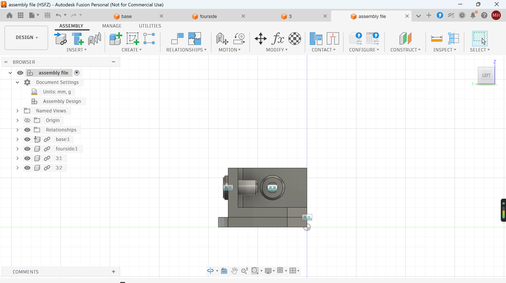
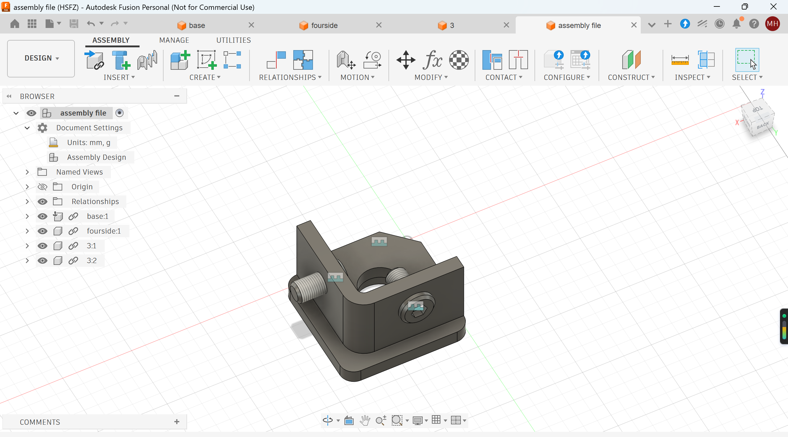
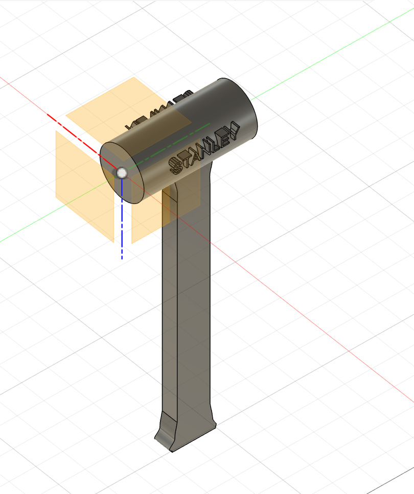
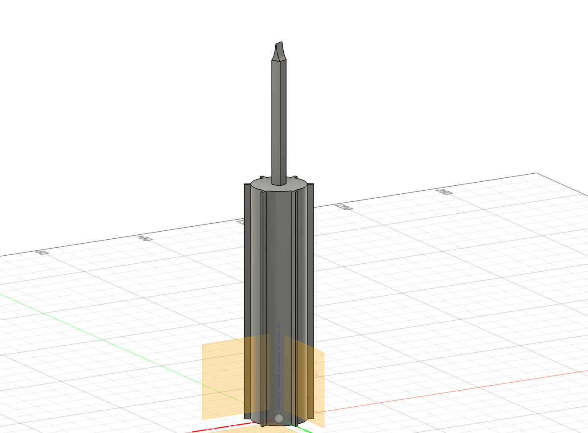

Weekly Lab Notes & Work
2D and 3D Design & Laser Cutting Training
I designed two box models in total this week, but only one has been laser cut into a physical prototype. My heptagonal seven-sided storage box has beautiful symmetrical aesthetics. However, I did not get much time to use the laser cutter due to limited lab time, so this is still unfinished. The second box is a modified useless box with a lot more finger joint structures.



Assignment 2: Fusion 360 Tutorial Practice
I finished a beginner Fusion 360 tutorial series to get more familiar with CAD tools. I followed the instructions to build one complex 3D model throughout the lesson. This practice helped me understand core Fusion operations way better and made me realize how important calipers are for building real‑life sized models. I plan to keep going through more tutorial videos to improve my design skills later on.



Assignment 3: Caliper Measurement & Fusion Modeling
I used calipers to measure two physical objects from the lab and rebuilt their exact sizes inside Fusion 360. Accurate real‑world measurement lets me design parts that fit physical items perfectly, which will be really useful for my wearable final project later.

